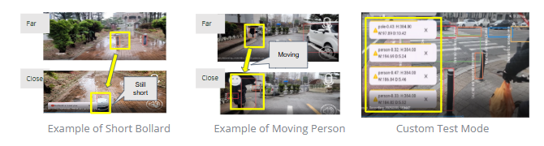

Alert Rule System
Key Objective
Our adaptive alert engine uses YOLO outputs to trigger spoken warnings based on real-time detection and object location. This system aims to enhance safety while minimizing alert fatigue.
- To reduce fatigue of users by alerting only when it matters
- To enhance usability with directional guidance
- To provide safer decision-making by right-time warnings based on front-end rule sets
Alert Rule Development
Essentially, SafeWalk does not alert for every object detected by the model. It only provides alerts when users need to make safer decisions. To achieve this, the system checks various parameters of each object's bounding box—such as its center width, height, top, and bottom. As an object gets closer to the user, its bounding box becomes larger, indicating an increase in both height and width. Additionally, by analyzing the center position of the bounding box, the system can determine whether the user is approaching the object from the right, left, or directly in front.

Bounding box logic for directional alerts
Adaptive Alert
There are two modes. The detection mode is the initial alert that users receive. In this mode, objects are detected along with directional guidance (right, left, or in front), ensuring users are aware of them ahead of time. When an object moves closer to the user, a stronger alert is triggered, stating, “Be careful {obstacle}.” Different parameter conditions are used to differentiate these two modes.

Two-stage adaptive alert system
Challenges & Solution
Developing consistent alerting rules for all object classes due to drastically different shapes and sizes—such as wide cars, narrow and short bollards, and moving people—required extensive testing and adjustments. We employed a custom test mode to evaluate how bounding boxes behaved in real-world conditions and tuned our logic accordingly.
Custom test mode for bounding box calibration